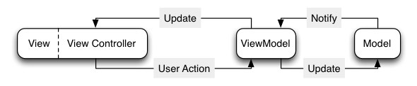

Author: Charles Zhu
Summary: 设计模式
MVC的无奈
MVC结构是学习iOS开发的人最先学习的一种开发模式，apple提倡以MVC为中心的开发模式。因为它很好的解构了应用场景中相关而又各自独立的部分：视图，视图控制器和数据模型。在MVC的世界里，控制器负责将模型中的数据以内容的形式展现到视图中，同时也把视图上产生的数据变化传递给模型从而将这种变化持久化。于是，在稍微复杂的app中，控制器中的内容会很庞大：网络操作，数据存储，手势响应等等。几乎可以确定，如果app需要添加新功能，超过一半的新增代码是添加在控制器中，这样不可避免的造成控制器的冗余以及大段无法重用的重复代码。
在开始MVVM时，我们可以稍稍考虑下现有MVC的问题。
视图
毋庸置疑，视图的作用很重要，但在设计中，视图是否需要和控制器，数据模型同等的地位呢？要知道绝大多数情况下，视图是不会重用的，往往“耦合”在视图控制器中，所以往往代码中有几个view controller，就能知道程序会有几个页面。此外，视图中的UI元素也是直接作为变量存在在控制器代码中，因为只有这样才方便刷新。很显然，视图控制器就可以代表视图本身。
控制器
控制器需要把模型代表的数据以合适的形式显示在视图上，这样免不了需要处理（当然也有不需要处理的简单情况，这种不考虑）。这部分我们可以通过创建个工具类生成个类方法来实现。可是，当处理大型工程的适合，你会发现这个工具类里的方法或者需要的参数会越来越多或复杂。到最后，工具类会包含所有数据模型类的转换处理方法。这样就显得臃肿，而且在需要转换某个模型类数据的适合，代码提示会给出很多种选择，需要你去甄别。
从上所知，控制器包含了“太多”处理数据的流程——也叫展现逻辑(presentation logic)， 下面我们可以看到MVVM如何解决这一部分的问题。
MVVM
在知道MVVM后，我google了一下，发现这个概念是微软提出的。好吧，设计思想是跨平台，放之四海而皆行的真理。首先来看看MVVM的架构：

上图中，视图和视图控制器作为整体连结在一起，通过视图模型(viewmodel)和数据模型发生关系：
- 如果数据有了变化，那么通过viewmodel将“变化”通知给视图控制器
- 用户操作需要更新持久化数据时，也是通过viewmodel来起作用
很显然，viewmodel的出现把与数据模型息息相关的处理部分从视图控制器中移除，这样控制器就得到了“解脱”。虽然多了viewmodel，可是不会增加太多任务，而且重要的是viewmodel很容易进行测试——稍有经验的人都知道视图控制器的测试问题可以成为一个永恒的话题。此外，使用MVC的过程迁移到MVVM并不会太难，——迁移的过程恰好也是梳理的过程，并且整理的更直观。
动态响应
假设有个app只要简单的直接显示人的姓和名，不需要展现逻辑，是否也不需要viewmodel了呢？继续看上图，你会发现model到viewmodel方向是notify。在app中，一切的变化都可以归结为状态的变化：比如输入字符，用户每输入一个字符，程序都会收到一次相应。又比如，刷新数据，数据接受完毕后，才会去显示。所以，当数据模型变化后，我们会通过一系列机制来“刷新”视图：代理，通知，KVO等等。而viewmodel也需要有这种特性：当数据有个变化后，能够感知，从而可以告诉视图控制器刷新界面。这种响应，通过KVO或者通知都能实现，而在业界现在首推 ReactiveViewModel(提到ReactiveCocoa，可以从函数式响应变成开始聊个不停，但这里对ReactiveCocoa本身不做探讨，因为实践中尚未使用)，需要深入的可以去github上看看。使用过cocoa上controller object的，应该对这部分很感兴趣。
总结
使用MVVM的好处：
- 简化了控制器内容
- 归并了工具类
- 便于测试
- 易于动态映射
本文是阅读了Model-View-ViewModel for iOS有感而发, 文中的图片也来源于此。
其中文末给出的参考文章和示例代码，值得一看。